Исследуйте. Обсуждайте. Находите единомышленников.
АIMs - место где встречаются музеи и цифровые технологии
ПрисоединитьсяВажные даты
и слушателей
и слушателей
Об AIMS
Изучите перспективы интеграции цифровых технологий в музейное пространство на нашем Международном семинаре "Искусство и инновации в музеях" (AIMs-2026).
Хотя семинар в первую очередь посвящен мультимедийным и цифровым технологиям в музеях, он также охватывает проблематику сценографии, экспозиционного повествования и зрительского восприятия.
Наша цель – исследовать, как новые инструменты трансформируют выставки и их восприятие.
Семинар проводится в двух локациях: Нови-Сад (Сербия) и Санкт-Петербург (Россия).
Рабочие языки семинара – английский, сербский и русский.
Главные темы
Выставочный дизайн
вопросы и методы разработки концепций визуального представления экспозиций; работа с освещением и пространственной композицией; теория цвета в задачах выставочного дизайна.
Нарратив экспозиции
выбор повествовательного языка; работа с экспонатами; коммуникация между куратором и дизайнером; проблемы эффективной передачи информации.
Интерактивное путешествие
интеграция интерактивных элементов в выставки (дополненная реальность, виртуальная реальность); создание маршрутов и сценариев для вовлечения посетителей; разработка интерактивных инсталляций; создание визуальных и звуковых эффектов.
Лингвистические технологии в музеях
содействие многоязычному доступу и инклюзивному общению; интеграция перевода на основе ИИ и интерактивных языковых инструментов в выставки; поддержка сохранения и представления культурного наследия.
- Видео
использование видео как средства повествования и пространственного восприятия; разработка проекций, связывающих кураторские концепции с сенсорным опытом посетителей. - Аудиодизайн
создание аудиогидов, звуковых инсталляций и интерактивных аудиоэлементов. - Интерактивные интерфейсы
разработка и внедрение приложений и интерактивных панелей, предоставляющих посетителям новые способы взаимодействия с контентом музея. - Анализ данных, машинное обучение и пользовательский опыт
применение анализа данных и методов машинного обучения для персонализации опыта посетителей. -
Многоязычный доступ и перевод с использованием ИИ
стратегии для обеспечения многоязычного доступа на основе языковых технологий в режиме реального времени. -
Нарративная медиация
использование лингвистического анализа для уточнения повествования на выставках и межкультурной семантики в этикетках и описаниях. -
Интерактивные языковые инструменты
использование NLP в музейных практиках, интеграция чат-ботов и голосовых помощников для персонализации общения с посетителями. -
Цифровое лингвистическое наследие
сохранение языков посредством цифровых архивов и визуализация языкового разнообразия.
Ключевые докладчики AIMs
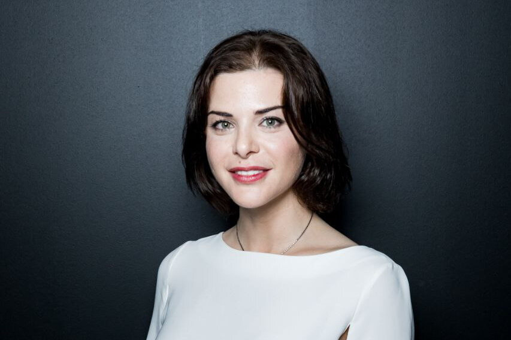
Анна Ялова
директор Центрального выставочного зала «Манеж»
Наталья Метелица
директор Санкт-Петербургского государственного музея театрального и музыкального искусства
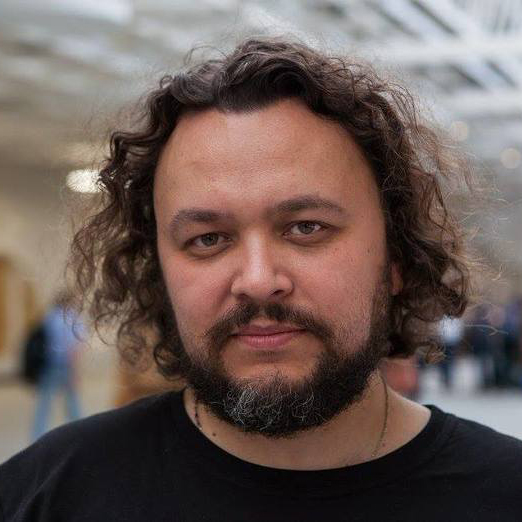
Андрей Пунин
художник и архитектор, Школа дизайна НИУ ВШЭ
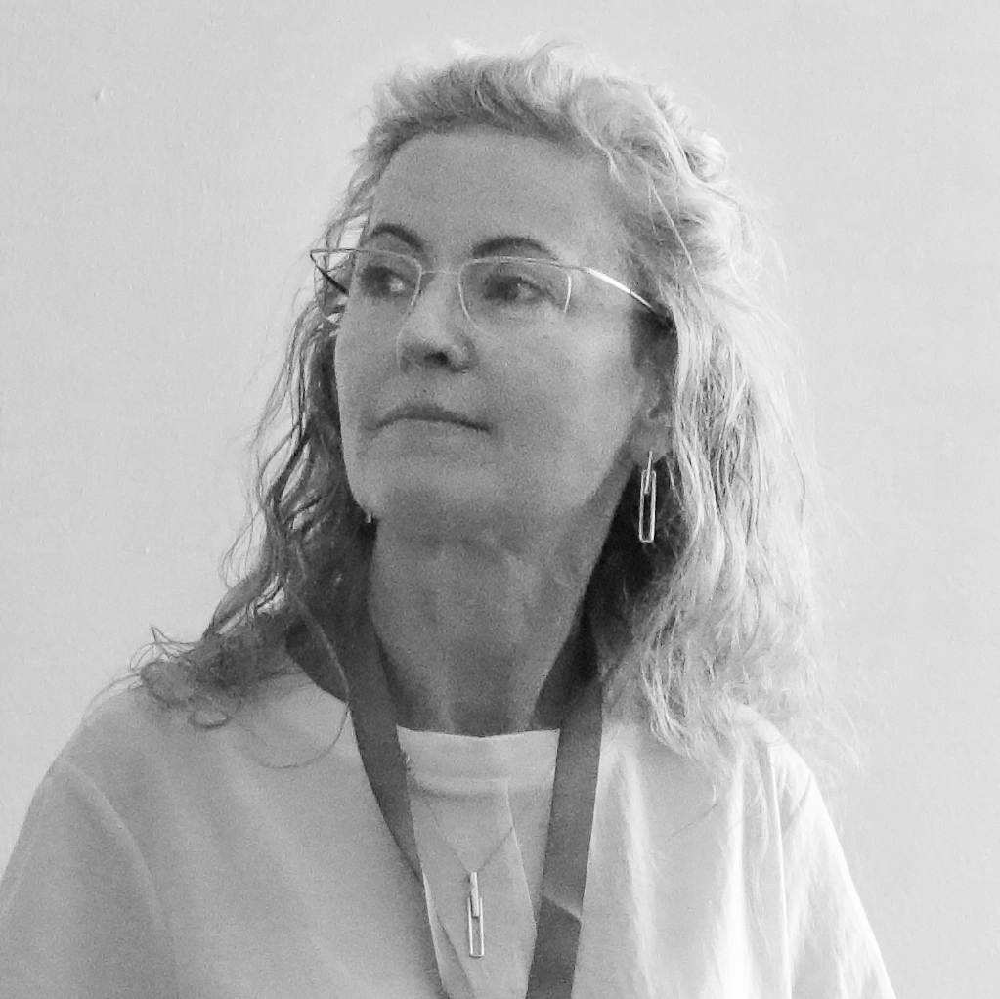
Ольга Аршанская
директор международного фестиваля светового и медиаискусства «Ночь света»
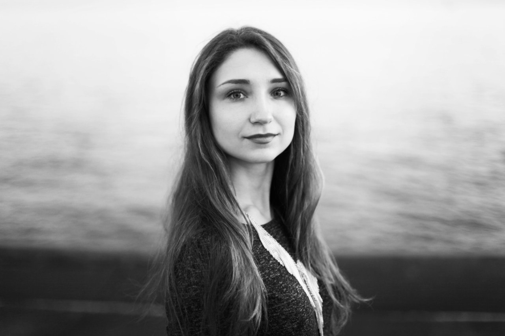
Юлия Мачевская
куратор Мастерской М.К. Аникушина, филиал Музея городской скульптуры
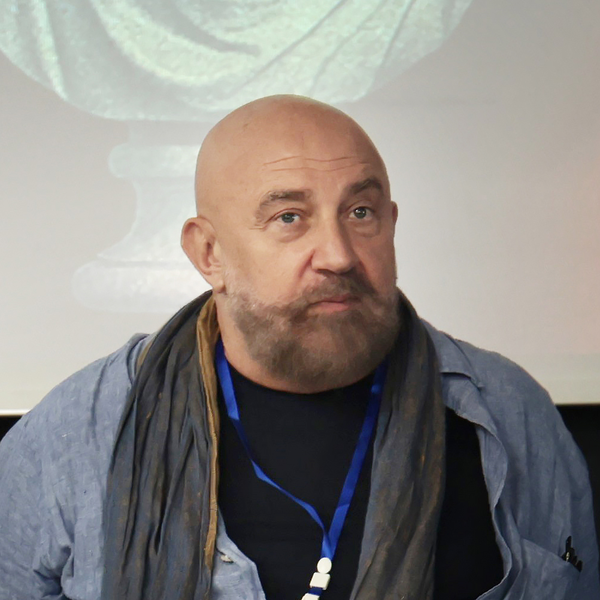
Павел Каплевич
художник-постановщик, автор и продюсер выставочных проектов
Даша Захарова
Мультимедийный художник
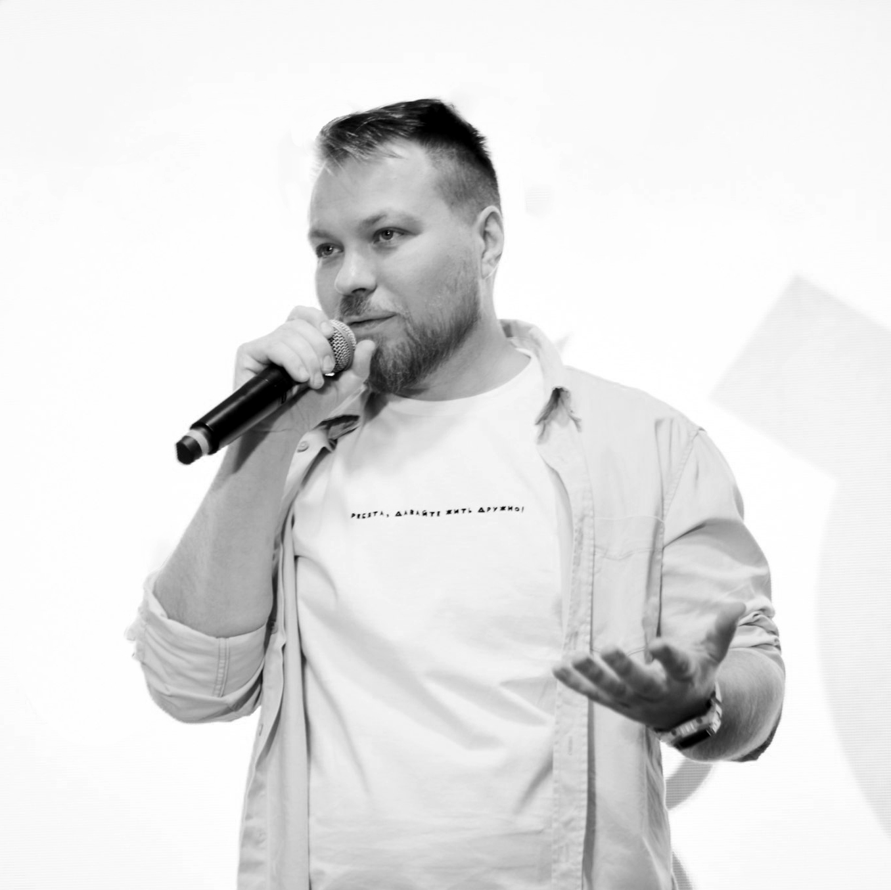
Николай Кислухин
руководитель отдела специальных проектов Третьяковской галереи в Самаре
Как присоединиться к семинару
Целевой аудиторией семинара являются кураторы выставок, IT-специалисты, создающие цифровой и мультимедийный контент для музеев, а также искусствоведы и культурологи.
Для участия в семинаре необходимо пройти регистрацию.
Слушатели являются неотъемлемой частью AIMs.
Следите за обновлениями: программа будет опубликована ближе к датам проведения семинара.Примите участие в качестве докладчика!
Предусмотрены два формата участия в семинаре AIMs в качестве докладчика:
Прикладная секция
(без публикации статьи)
Доклады о реализованных проектах и выставках, включая экспериментальные и прикладные творческие практики
Форматы докладов
Большая презентация: реализованные проекты и выставки,
⏱ 20 мин + 5 мин на вопрос-ответ.
Короткая презентация: проекты и концепции на ранней стадии,
⏱ 10 мин + 2 мин вопрос-ответ.
Название и аннотацию доклада (200-500 слов) необходимо отправить на электронную почту семинара, рецензирование занимает не более 2 недель
Окончание приёма заявок:
5 мая, Нови-Сад | 10 июня, СПБ
Научная секция
(возможна публикация статьи)
Доклады секции, претендующие на публикацию, должны соответствовать тематике Springer CCIS
Форматы докладов
Развёрнутый доклад: результаты завершённых исследований,
⏱ 20 мин + 5 мин вопрос-ответ
Короткий доклад: исследования на ранней стадии,
⏱ 10 мин + 2 мин вопрос-ответ.
Заявку необходимо подать через систему CMT
(см. процедуру),
результаты рассмотрения будут опубликованы 20 апреля.
Окончание приёма заявок:
15 марта
Все материалы, представленные по обоим направлениям, будут рассмотрены программным комитетом.
Семинар проводится в очном формате.
Возможность участия в онлайн-формате может быть рассмотрена индивидуально путем отправки запроса на электронный адрес семинара.
Сборник трудов конференции
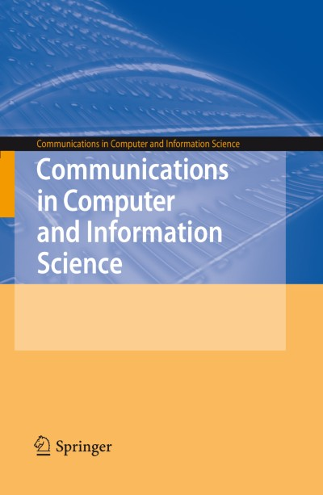
Научная секция семинара AIMs является частью конференции «Интернет и современное общество» (IMS 2026). Поэтому доклады, принятые к выступлению в этой секции, будут опубликованы в сборнике материалов конференции IMS, индексируемом в Scopus. Сборник IMS-2025 доступен здесь.
Мы приглашаем докладчиков представить научные статьи, подготовленные на основе их выступлений на конференции. Представленные рукописи должны быть оригинальными, ранее не опубликованными и соответствовать тематике семинара и серии CCIS.
Все материалы проходят процедуру двойного слепого рецензирования.
Статьи принимаются и публикуются на английском языке. Это обусловлено международным статусом семинара и требованиями издательской серии Springer.
Подача материалов осуществляется через систему Microsoft CMT.
Процесс подачи заявки на научную секцию
Регистрация
в CMT
название + аннотация
Загрузка
статьи
PDF-формат
(анонимная версия)
Результаты
рецензирования
Загрузка
итоговой версии статьи
DOCX-формат
(с правками
после рецензии)
Полные статьи: 11-15 страниц | Короткие статьи: 6-10 страниц
Представляемые рукописи должны быть оригинальными (индекс сходства < 15%).
Тексты, созданные с использованием инструментов ИИ, не допускаются.
Шаблон Springer ↗ | Подача статей ↗ CMT: инструкция (PDF) ↗
Если участие в научной секции планируется без публикации статьи, при подаче заявки необходимо указать название доклада, а в начале аннотации первой строкой добавить пометку: «Доклад без публикации». Также напоминаем, что участие без публикации возможно в рамках Прикладной секции.
Программный комитет
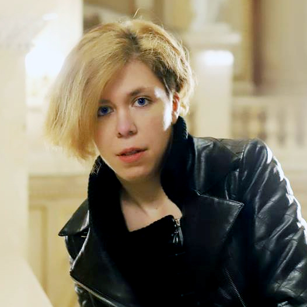
Анна Чижик
кандидат культурологии, режиссер мультимедийных проектов,
доцент, Санкт-Петербургский государственный университет, Россия
Катарина Чокрлич
Дизайнер выставок,
Болонский университет, Италия
Тияна Йеврич
Креативный директор по визуальной идентичности и работник культуры, Сербия
Александр Садохин
доктор культурологии, кандидат философских наук, профессор,
главный редактор журнала "Культура и цивилизация", Россия
Ирина Мамонова
кандидат искусствоведения,
куратор выставок,
доцент, Санкт-Петербургский государственный университет, Россия
Борко Ковачевич
доктор лингвистических наук, профессор,
Филологический факультет Белградского университета, Сербия
Бойан Джорджевич
профессор библиотечно-информационных наук,
Филологический факультет Белградского университета, Сербия
Регистрация на мероприятие в
Пожалуйста, выберите желаемый формат участия,
после чего вы сможете заполнить регистрационную форму.
Обратите внимание,
что регистрация обязательна для всех участников.
Слушатель
Ранняя регистрация
Регистрация до 13 мая бесплатна.
Стандартная регистрация
Регистрация после 15 мая стоит 400 динар (≈ 4 евро).
Докладчик
Прикладная секция
Ранняя регистрация
Регистрация до 13 мая бесплатна.
Стандартная регистрация
Регистрация после 15 мая стоит 2000 динар (≈ 17 евро).
Докладчик
Научная секция
Ранняя регистрация
Регистрация до 13 мая стоит 3500 динар (≈ 30 евро).
Стандартная регистрация
Регистрация после 15 мая стоит 7000 динар (≈ 60 евро).
Важно: студенты и аспиранты, выступающие с докладом на научной секции,
освобождаются от уплаты регистрационного взноса.
Контакты
Если у вас возникнут вопросы,
будем рады ответить — свяжитесь с нами!
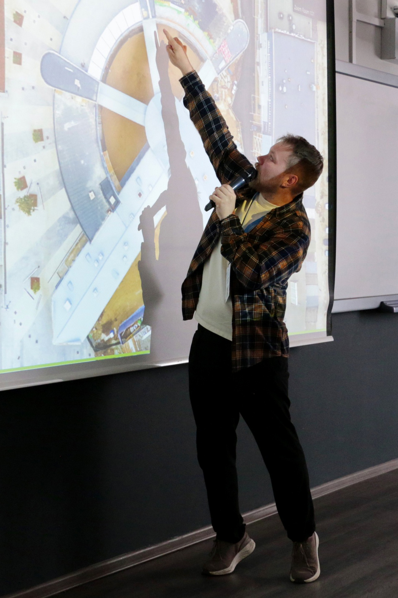
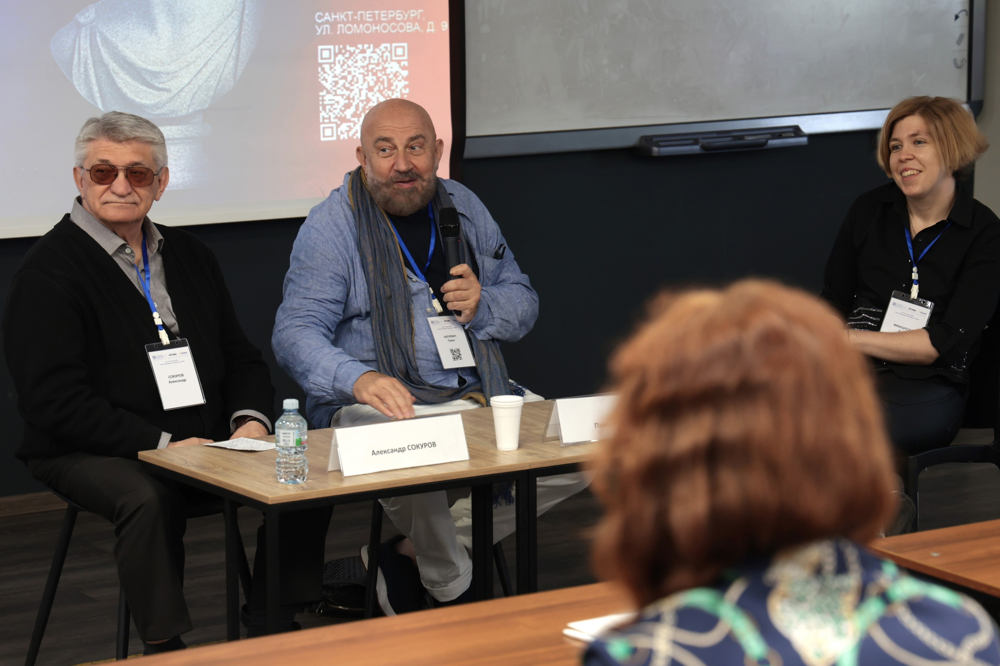
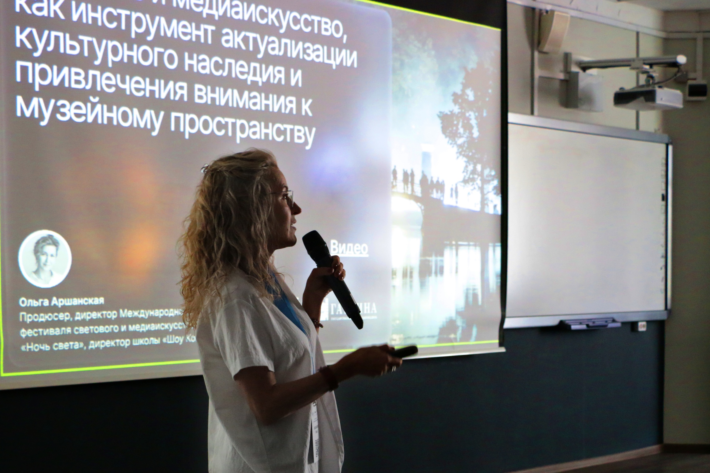
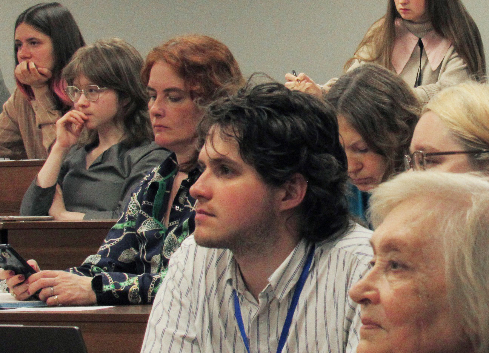
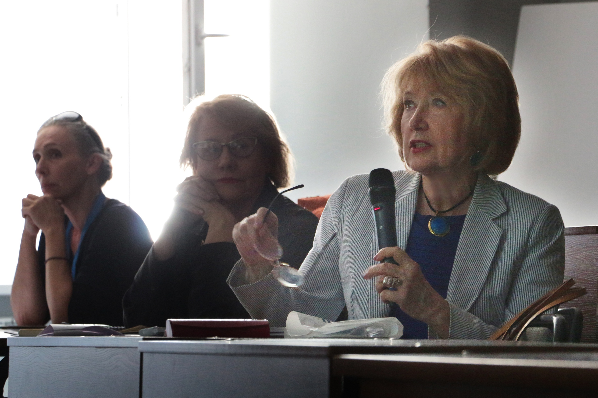
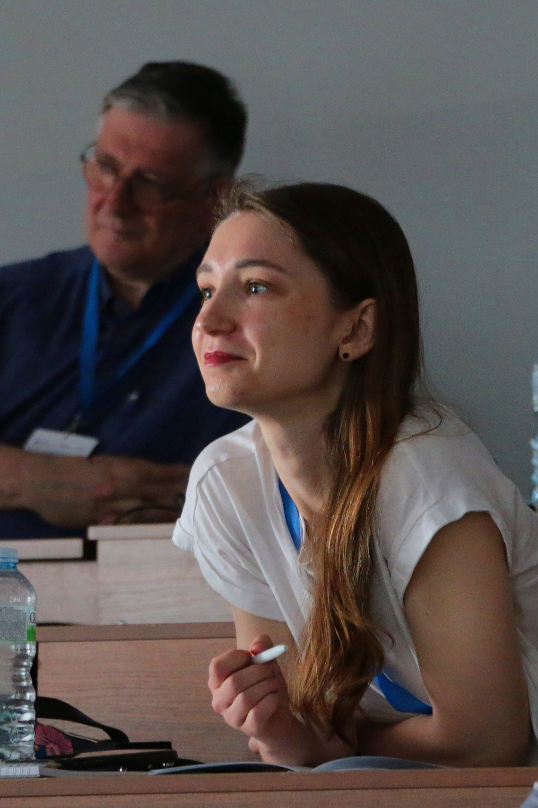
Расписание
Информация о докладчиках и программе семинара 2026 года будет опубликована позднее.
Подпишитесь на обновления, и мы уведомим вас, когда откроется регистрация и будет опубликована программа семинара 2026 года.